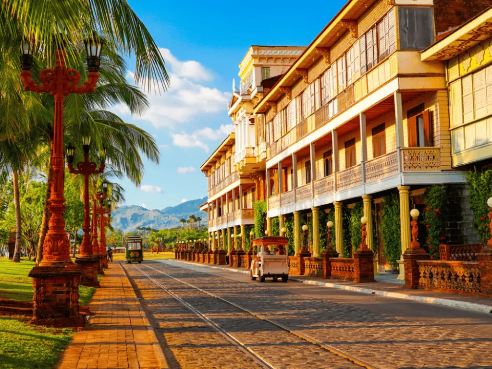
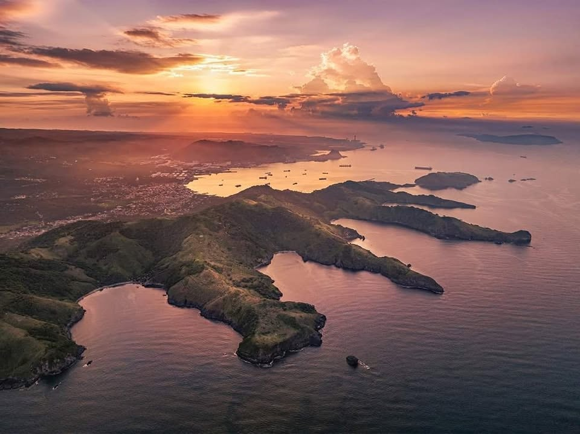
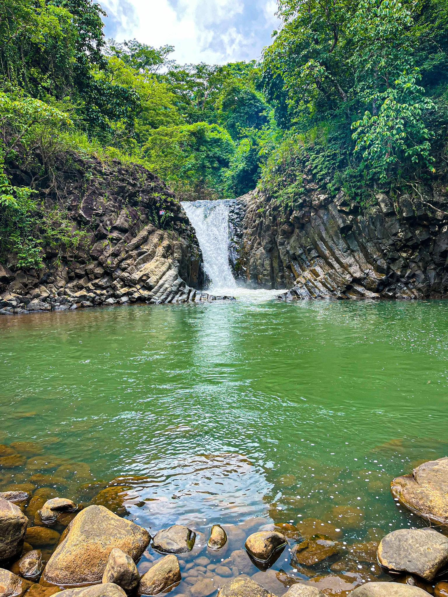
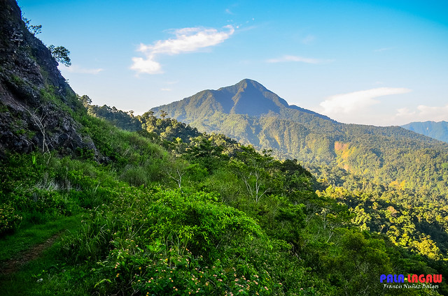
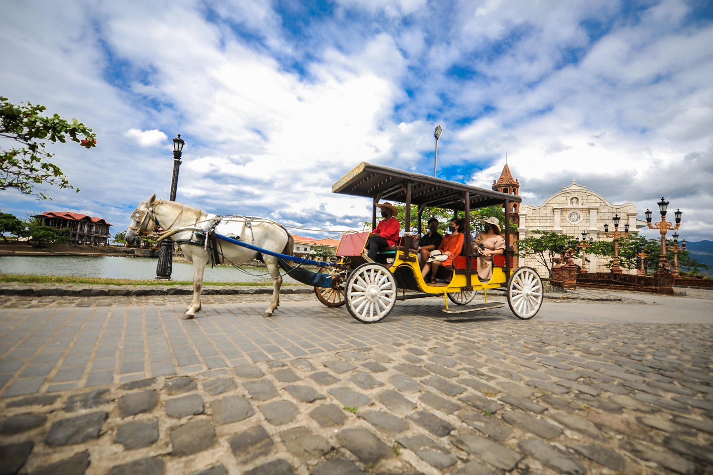
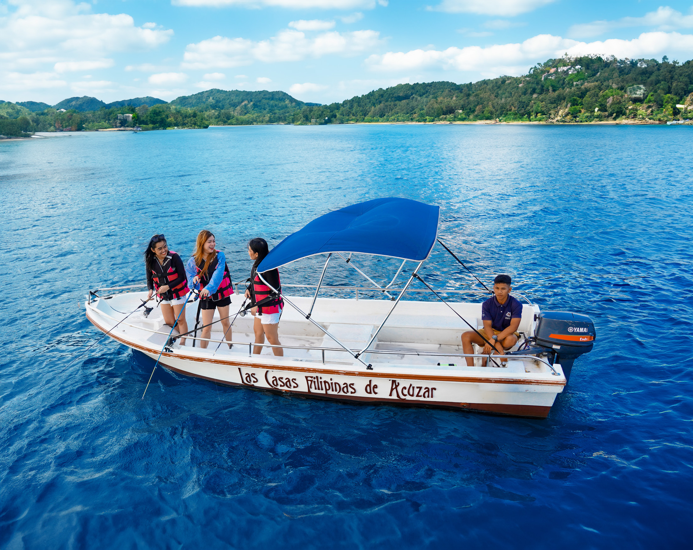
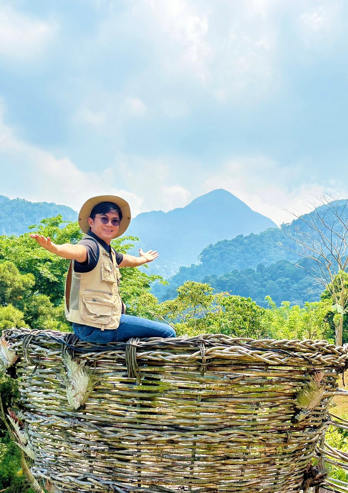
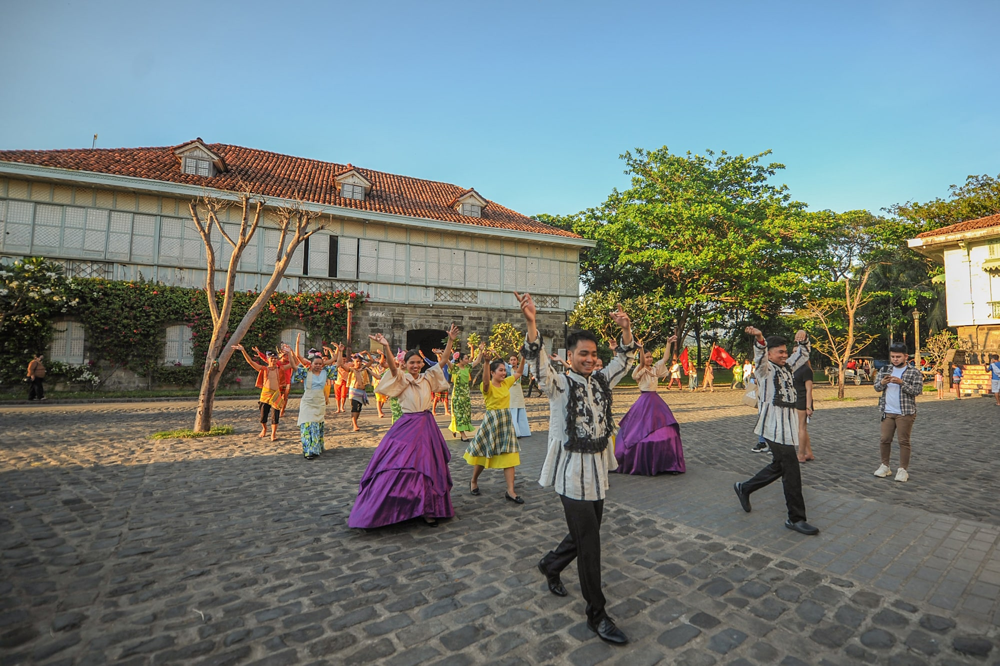

Experience a destination where history, nature, and adventure come together. Located in Central Luzon, Bataan offers stunning mountain landscapes, pristine beaches, cultural heritage sites, and unforgettable outdoor experiences.
Bataan is a hidden gem that combines rich historical significance with natural beauty. From scenic coastlines and waterfalls to memorial sites that tell stories of courage and resilience, Bataan has something for every traveler.

A historic landmark featuring the iconic Memorial Cross that honors the bravery of Filipino and Allied soldiers during World War II.

A heritage destination showcasing restored Spanish-Filipino architecture, cobblestone streets, and cultural experiences.

Known for dramatic rock formations, crystal-clear waters, cliff diving spots, and hidden beaches.

A peaceful natural attraction surrounded by lush greenery, perfect for relaxation and photography.

A favorite destination for hikers and nature lovers seeking breathtaking views and diverse wildlife.

Walk through memorials and museums that preserve Bataan's important role in Philippine history.

Enjoy swimming, kayaking, snorkeling, and boat tours along Bataan's coastline.

Discover scenic trails, waterfalls, and mountain viewpoints.

Visit heritage villages, local markets, and festivals that celebrate Bataan's traditions.
Don't miss these Filipino favorites:
The ideal time to visit Bataan is during the dry season, from November to May, when outdoor activities and sightseeing are most enjoyable.
"Ganda dito. Legit." - Zy
Whether you're looking for a relaxing beach getaway, a historical journey, or an outdoor adventure, Bataan offers unforgettable experiences waiting to be discovered. Create lasting memories in one of the Philippines' most fascinating destinations.